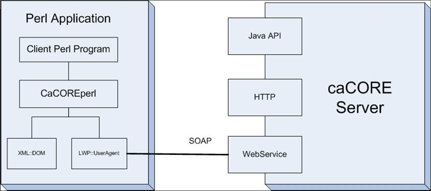

CaCOREperl is a Perl application programming interface to caCORE hosted vocabulary,
metadata, and biomedical data. It implements the caCORE object model with object-oriented
methodology, and encapsulates webservice invocations and XML parsing so that programmers deal with caCORE
objects directly. CaCOREperl is available in Windows, Solaris and other Perl
supported operating systems
CaCOREperl requires Perl version 5.6.0 or above.
Current version of CaCOREperl is 3.2.
The following picture describe the architecture of CaCOREperl and how it is related to the caCORE server.
This picture illustrates the following features of CaCOREperl:
There are multiple ways to installing Perl modules, the following are three of them.
First unzip the CaCORE to a temporary folder. Then open a Command window,
cd to the directory that contains this README file and type the following.
perl Makefile.PLperl Makefile.PL PREFIX=/home/me/perl INSTALLDIRS=perlmakemake testmake installinstall XML-DOMThis will work on any platform, any Perl version. Run the command:
perl -MCPAN -e shellThis is only recommended if all else failed. You can unzip this distribution, and copy the entire CaCORE folder under the
lib folder to the lib/site folder in your Perl installation folder. For example, assume that you unzip this distribution
to C:\temp, and your Perl installation is in C:\Perl, you can open a command prompt and type:
copy C:\temp\CaCORE\lib\CaCORE C:\Perl\lib\siteYou can find sample scripts in the examples folder. It contains examples for using CaBIO, EVS, and CaDSR objects. The CaBIO test example (caBIOtest.pl) contains multiple examples that illustrate the multiple search mechanisms implemented in CaCOREperl. If you successfully install CaCOREperl, you can run these example programs directly as a starting point.
Domain objects, such as gene, are represented as objects in CaCOREperl. All objects in CaCOREperl follows a set of identical patterns:
new;Details of each domain object can be obtained in the object description. Here we describe the general pattern that applies to all domain objects. Refer to index.html for description of CaCORE objects.
A new instance of the object is created via the new method. The following code creates a new gene instance.
my $gene = new CaCORE::CaBIO::Gene;setObject where Object is the name of the attribute, for example, $gene->setSymbol. When calling
this method, the value of symbol should be passed in as a parameter. For example: $gene->setSymbol("NAT2") sets the $gene
instance's symbol attribute to "NAT2";getObject where Object is the name of the attribute, for example, $gene->getSymbol. When calling
this method, the return value is the value of the attribute. For example, $gene->getFullName returns the full name of the $gene.The relationship between two objects can be one-to-many or many-to-one. For example, one Gene is related to multiple Pathway objects (one-to-many), and many Genes can be related to one Taxon (many-to-one).
All objects that are associated with the current object can be access via the getX (for many-to-one associations)
or getXCollection (for one-to-many associations) methods. Where "X" is the name of the associated object.
Example: $gene->getTaxon retrieves the Taxon object associated with the Gene object, since one Taxon
object is associated with many Gene objects, and $gene->getPathwayCollection retrieves all the Pathway objects associated,
with the Gene object. Since one Gene object is associated with many Pathway objects.
The following table is a description of all objects associated with Gene, how they are related, and the methods of retrieving them.
| Association Object Name | Relationship | Getter |
|---|---|---|
| Chromosome | Many to one | getChromosome |
| DatabaseCrossReference | One to many | getDatabaseCrossReferenceCollection |
| ExpressionFeature | One to many | getExpressionFeatureCollection |
| GeneAlias | One to many | getGeneAliasCollection |
| GeneOntology | One to many | getGeneOntologyCollection |
| GeneRelativeLocation | One to many | getGeneRelativeLocationCollection |
| GenericReporter | One to many | getGenericReporterCollection |
| Histopathology | One to many | getHistopathologyCollection |
| HomologousAssociation | One to many | getHomologousAssociationCollection |
| Library | One to many | getLibraryCollection |
| Location | One to many | getLocationCollection |
| NucleicAcidSequence | One to many | getNucleicAcidSequenceCollection |
| OrganOntology | One to many | getOrganOntologyCollection |
| Pathway | One to many | getPathwayCollection |
| Protein | One to many | getProteinCollection |
| Target | One to many | getTargetCollection |
| Taxon | Many to one | getTaxon |
Lazy Fetch. caCORE server supports (except for EVS) the so called "lazy fetch" kind of searches. This means that when you query for certain objects, only the attributes of the objects are retrieved and returned. None of the objects associated with the target object(s) are returned. For example, when you call $gene->getPathwayCollection, the caCORE server only retrieves and returns all the pathway objects associated with the $gene object. It will not return any objects that are associated with the pathway objects. To retrieve those objects, you must make subsequent calls.
See More Resources for additional sources of information.